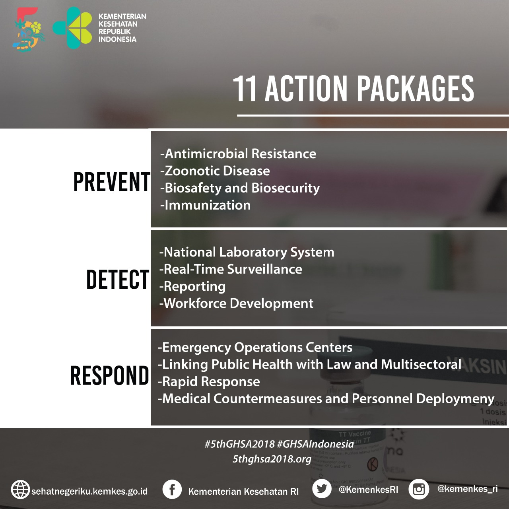

The 5th GHSA, Indonesia Mengawal Terciptanya Keamanan Kesehatan Dunia Mobilitas manusia di era milenial bukan hanya berdampak terhadap kecepatan penyampaian informasi. Ancaman kesehatan global menjadi sisi lain dunia tanpa batas yang mengantarkan penyakit-penyakit yang berisiko menyerang manusia serta ancaman bioterorisme. Peran aktif negara-negara di dunia diperlukan untuk bersama-sama menanggulangi ancaman berbagai penyakit berbahaya dan menular, baik secara disengaja maupun tidak disengaja. Wabah yang terjadi di suatu wilayah atau negara, dapat dengan cepat menyebar ke negara lainnya. Wabah tersebut berdampak sosial, ekonomi, dan keamanan yang luas. Organisasi internasional, seperti WHO (Badan Kesehatan Dunia), FAO (Badan Pangan Dunia), OIE (Organisasi Kesehatan Hewan Dunia), dan Bank Dunia telah mengembangkan sejumlah aturan, pedoman, dan kerangka sebagai acuan Momentum wabah Ebola pada tahun 2013 menjadi pengingat masih banyaknya negara yang belum melaksanakan regulasi badan kesehatan dunia secara optimal. Selain itu, berbagai upaya yang dilakukan masih bersifat sektoral. Indonesia bersama tiga negara lainnya, Amerika Serikat, Finlandia, dan Korea Selatan berinisiatif membentuk forum Global Health Security Agenda (GHSA) pada Februari 2014. Awalnya, GHSA diminati oleh 29 negara. Perkembangan pesat GHSA membuat Steering Committee GHSA berinisiatif untuk menyusun framework baru yang akan diterapkan pada 2019–2024. “GHSA memiliki manfaat besar yang semakin lama semakin disadari oleh negara-negara di dunia. Dalam kondisi seperti saat ini, keamanan kesehatan global harus diperkuat melalui forum seperti GHSA,” ujar Menteri Kesehatan RI Prof. dr. Nila F. Moeloek, Sp. M(K). Pola gerakan inisiatif tersebut, menurut Menkes, kini lebih tertata, baik dalam struktur, program, laporan sampai ke pembiayaan. Tujuannya agar GHSA dapat bermanfaat bagi anggotanya yang kini mencapai 65 negara. Anggotanya pun kian beragam mulai dari unsur pemerintah, lembaga filantropi, organisasi internasional, dan sektor non-pemerintahan. Menyikapi hal tersebut, organisasi- dalam upaya peningkatan kapasitas dimaksud. Namun demikian, wabah Ebola pada tahun 2013 menjadi pengingat masih banyaknya negara yang belum melakukan aturan-aturan dimaksud secara optimal. Selain itu, berbagai upaya yang dilakukan masih bersifat sektoral. Indonesia Aktif di GHSA Forum kerja sama antarnegara yang bersifat terbuka dan sukarela ini menjadikan Indonesia sebagai salah satu negara yang aktif berkontribusi, diantaranya menjadi anggota Tim Pengarah (Steering Group) bersama 9 negara lainnya, anggota Troika (2014-2018), serta menjadi Ketua Tim Pengarah (2016). Apresiasi positif dari berbagai negara anggota dan mitra membuat Indonesia ditunjuk sebagai tuan rumah pertemuan GHSA kelima di Nusa Dua, Bali pada 6-8 November 2018. Kelebihan forum ini adalah penguatan kerja sama multisektor dan multilaktor, mengingat penanganan ketahanan kesehatan tidak dapat dilakukan hanya oleh sektor kesehatan. Selain itu, GHSA juga bermaksud membangun komitmen dari para pimpinan tinggi negara untuk lebih memperhatikan penanganan isu health security. “GHSA Ministerial Meeting kelima ini mengambil tema Advancing Global Partnership, yang ditujukan untuk lebih mengembangkan kemitraan yang telah tercipta selama ini, juga potensi kemitraan yang tercipta di masa depan, dari berbagai pihak, baik itu kemitraan di tingkat global, regional, maupun nasional,” ungkap Menkes. GHSA Ministerial Meeting kali ini tidak hanya dihadiri oleh para Menteri Kesehatan dari negara anggota, namun juga Menteri Pertanian. Di pertemuan ini, Indonesia membawa pendekatan One Health. Maksudnya, kesehatan itu tidak hanya ditujukan kepada manusia namun juga kepada hewan. Karena seperti yang disadari saat ini, penyakit yang diderita oleh hewan akan berdampak kepada manusia, baik secara langsung dan tidak langsung. Menkes juga berharap, GHSA Ministerial Meeting kelima ini diharapkan lebih banyak pihak akan berperan aktif dalam meningkatkan keamanan kesehatan global, tak hanya dari pemerintah saja, namun juga sektor-sektor lain yang terlibat. Berita ini disiarkan oleh Biro Komunikasi dan Pelayanan Masyarakat, Kementerian Kesehatan RI. Untuk informasi lebih lanjut dapat menghubungi Halo Kemkes melalui nomor hotline 1500-567, SMS 081281562620, faksimili (021) 5223002, 52921669, dan alamat email kontak@kemkes.go.id. (gi) Biro Komunikasi dan Pelayanan Masyarakat Kemenkes